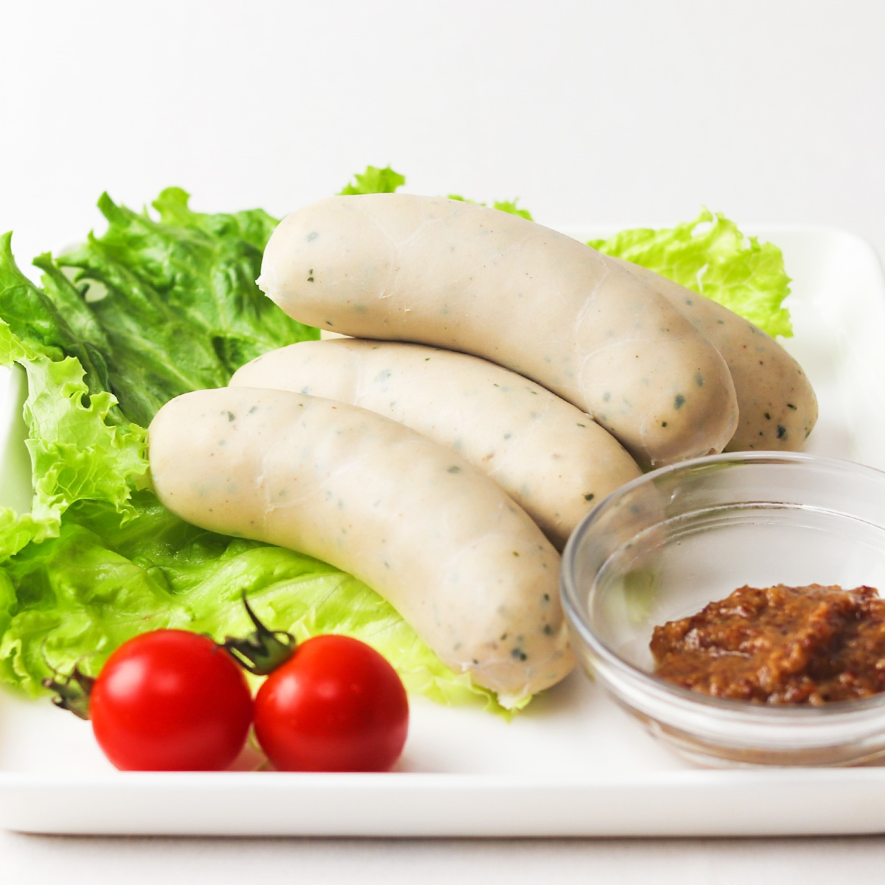

Hime. Y
Portfolio

Food
German food culture
ドイツは冷涼な気候で食物に乏しかったため、ソーセージやハムのような加工肉類などの保存食が発展しています。また、その気候でも育ち保存がきくことからドイツの食生活ではじゃがいもが重宝されています。

Weißeurst(ヴァイスヴルスト）
ミュンヘン名物のこのソーセージは仔牛肉にレモンやハーブで味付けしています。「白いソーセージ」という意味の名前で、傷みやすいため午前中に食べきるのが伝統とされています。
Eisbein（アイスバイン）
アイスバインは塩漬けにした豚すね肉をセロリや玉ねぎの香味野菜、香辛料と一緒に長時間煮込んで作った、ベルリンの名物煮込み料理です。

Sauerkraut（ザワークラウト）
肉料理やソーセージなどあらゆる料理の口直しに添えられる、ドイツ料理の定番の付け合わせです。ザワークラウトは酢を使用せず、キャベツを乳酸発酵させて作っています。
Brezel（プレッツェル）
日本ではお菓子だというイメージがあるプレッツェルですが、本場ドイツではもっちりとした食感が特徴的です。表面に岩塩をまぶしているためビールとよく合う、ドイツらしい食べ物です。
Srollen（シュトレン）
クリスマスを代表するこのお菓子もドイツの発祥です。クリスマスの4週間前から薄くスライスして少しづつ食べ進めていくという、ドイツの伝統的なお菓子です。
about
昭和女子大学国際学部国際学科1年 ドイツ語選択
7/26生まれ。趣味：テレビ見る（ドラマ、バラエティ、アニメ、海外ドラマetc.）、バレエ 好きな食べ物：さつまいも、かぼちゃ、果物、セブンのいちごサンド 白黒の「あられ」という名前の猫を飼っています。